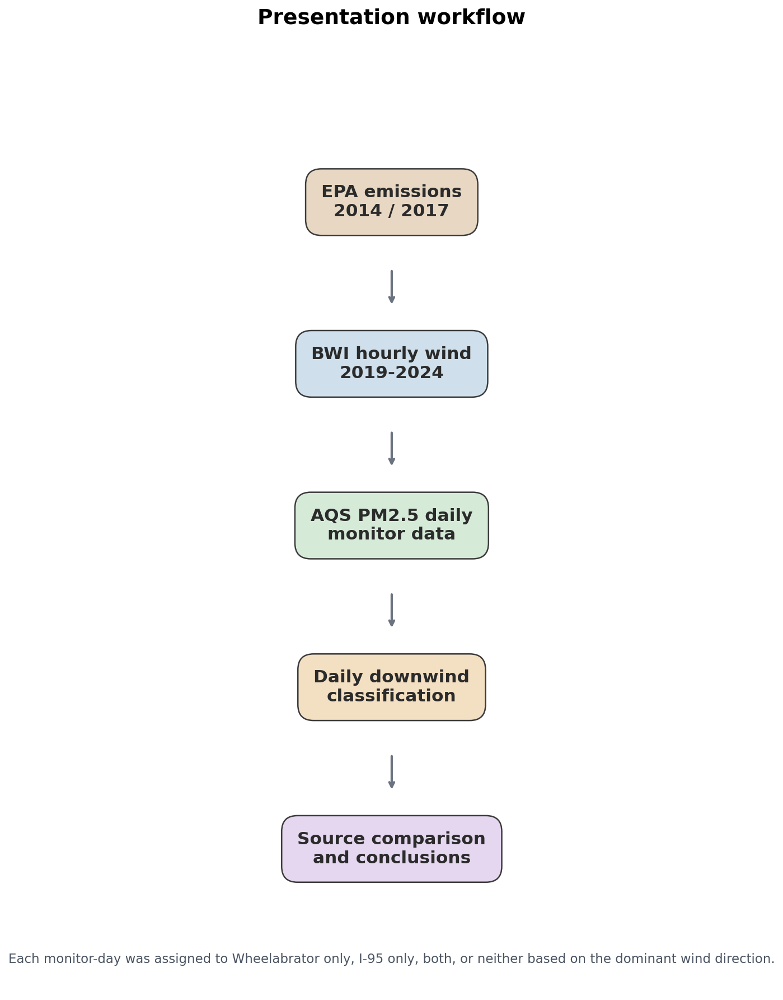

Directional Analysis of Wheelabrator Air Pollution in Baltimore
In this project, I compared wind-linked PM2.5 patterns from Wheelabrator Baltimore and the I-95 corridor using EPA emissions, AQS monitor data, and BWI wind observations.
Project framing
- I asked whether PM2.5 rose when monitors were downwind of Wheelabrator compared with I-95-only days.
- I used emissions inventories, hourly wind data, and daily PM2.5 monitor data to answer that question.
- I focused on whether a facility-specific signal remained visible after I separated it from the broader highway background.
Research Question, Objective, and Outline
I focused on whether PM2.5 was higher downwind of Wheelabrator than downwind of the I-95 corridor alone.
My research question
I asked whether ambient PM2.5 was higher when Baltimore-area monitors were downwind of Wheelabrator than when they were downwind of the I-95 corridor alone.
My objective
- I used a GIS-informed directional method to separate incinerator influence from highway influence.
- I compared Wheelabrator-only, I-95-only, both-source, and neither-source days.
- I summarized the result as a screening analysis that could support future monitoring and decision-making.
My outline
- I began with the problem statement and project objective
- I explained the study design, datasets, and directional method
- I reviewed facility emissions and wind patterns
- I presented the PM2.5 results, seasonal patterns, and monitor-level detail
- I stress-tested the result against directional overlap and regional transport
- I closed with conclusions, limitations, and recommendations
I moved from the source context, to the directional method, to the PM2.5 evidence, and then to my conclusions.
Study Area and Exposure Groups
I used this study area to compare the facility, the highway corridor, and the monitor locations that supported the PM2.5 analysis.
Why I used this geographic design
- I assigned 6 neighborhoods to near both wheelabrator and i-95.
- I assigned 6 neighborhoods to i-95 corridor only.
- I assigned 4 neighborhoods to control neighborhoods.
- I treated the I-95-only communities as a highway baseline instead of comparing the facility only to distant controls.
- I used the control neighborhoods to show what PM2.5 looked like when neither source was dominant.
Datasets and Directional Method
I combined emissions, wind, and monitor data to classify each day into source-based exposure categories.
My method
- I compiled Wheelabrator emissions from EPA NEI and GHG reporting data.
- I used 2019-2024 hourly wind data from BWI to classify which source each monitor was downwind of on each day.
- I deduplicated AQS PM2.5 records to one daily value per monitor and date.
- I compared PM2.5 on Wheelabrator-only, I-95-only, both-source, and neither-source days.
- I checked seasonal patterns to see whether the directional signal changed through the year.

Facility Emissions
I reviewed the emissions inventory by separating major pollutants from trace pollutants and metals.
I showed major pollutants in tons per year for 2014 and 2017.
My headline findings
- Total reported emissions increased from 3,159,929 lbs in 2014 to 3,248,587 lbs in 2017 (+2.8%).
- NOx remained the largest reported pollutant by mass, while PM and PM2.5 both increased between inventory years.
- Trace pollutant changes were mixed: mercury and lead declined, while hydrogen fluoride and nickel increased.
Wind Patterns and Seasonal Transport
I used wind patterns to show which neighborhoods were likely to be downwind of the facility or the highway on a given day.
Wind dataset: 40,073 hourly observations from 2019-01-01 to 2024-12-30, average speed 3.66 m/s.

I treated wind direction as the link between the emissions inventory and the ambient PM2.5 readings.
Main PM2.5 Finding
I summarized the deduplicated PM2.5 dataset by downwind category to compare Wheelabrator, I-95, both, and neither.
How I read this result
- I found that across all monitor-days in the deduplicated PM2.5 dataset, Wheelabrator-only days averaged 8.81 ug/m3 versus 6.62 ug/m3 on I-95-only days, a 33.1% difference that is directionally consistent with a facility contribution.
- I found that when monitors were downwind of both sources, PM2.5 averaged 8.92 ug/m3, versus 7.30 ug/m3 on neither days (22.2% higher).
- I treated the gap as directionally consistent with a facility contribution, but I held off on causal language until I stress-tested the result against regional transport and bearing overlap in the next slides.
Monitor-by-Monitor Wheelabrator Signal
I compared the directional pattern at each monitor to see where the Wheelabrator signal was strongest and where it weakened.
| Monitor | WB only | I-95 only | Delta |
|---|---|---|---|
| Lake Montebello | 9.25 | 6.20 | +49.1% |
| Oldtown | 9.71 | 6.92 | +40.3% |
| Padonia | 9.33 | 7.92 | +17.7% |
| Essex | 6.13 | 9.28 | -33.9% |
I saw a positive Wheelabrator-leaning delta at three monitors and a reversed delta at the fourth, which I treated as a real counter-example rather than a dismissible exception.
Seasonal PM2.5 Pattern
I used the seasonal comparison to show when the Wheelabrator-versus-I-95 contrast was clearest and when it became less distinct.
My seasonal interpretation
- I could not fully separate the Wheelabrator signal from regional southwesterly transport: 70.7% of Wheelabrator-only monitor-days had mean winds from the 180-270 degree quadrant that also carries Ohio Valley and mid-Atlantic PM2.5 into Baltimore.
- I saw summer PM2.5 rise across every category, so source-specific differences compressed.
- I saw a clearer Wheelabrator-only versus I-95-only gap in spring, fall, and winter.
Monitor Evidence Detail
I compared pollution roses, directional comparisons, time series, and seasonal patterns for each monitor.
Directional Overlap and Regional Transport
I stress-tested the PM2.5 gap against two confounders: bearing overlap between Wheelabrator and I-95, and the share of Wheelabrator-only days that also had southwesterly winds carrying regional PM2.5.
What I found in the stress test
- I found that 70.7% of Wheelabrator-only monitor-days had mean winds from 180-270 degrees, the same quadrant that brings Ohio Valley and mid-Atlantic transport into Baltimore.
- I compared that with 44.5% on I-95-only days, which shows that southwesterly regional transport is concentrated in the Wheelabrator-only category rather than spread evenly.
- I found that bearing-to-Wheelabrator and bearing-to-I-95 differ by less than the 45 degree tolerance at several monitors, so the WB-only and I-95-only labels are not fully independent categories.
| Monitor | Bearing to WB | Bearing to I-95 | Angular offset | WB-only SW share |
|---|---|---|---|---|
| Oldtown | 214° | 237° | 23° | 72% (28/39) |
| Essex | 251° | 226° | 25° | 17% (9/52) |
| Lake Montebello | 205° | 274° | 69° | 76% (109/143) |
| Padonia | 179° | 172° | 7° | 94% (78/83) |
Angular offsets at or below 45 degrees mean the WB-only and I-95-only wind categories overlap inside the tolerance window used by the classifier.
Conclusions
I summarized the strongest patterns that emerged from the directional analysis here.
Conclusion 1
I found that across all monitor-days in the deduplicated PM2.5 dataset, Wheelabrator-only days averaged 8.81 ug/m3 versus 6.62 ug/m3 on I-95-only days, a 33.1% difference that is directionally consistent with a facility contribution.
Conclusion 2
I found that 3 of 4 PM2.5 monitors showed higher mean PM2.5 on Wheelabrator-only days than on I-95-only days, though the magnitude varied across sites. The strongest positive signal appeared at Lake Montebello (+49.1%).
Conclusion 3
I found that when monitors were downwind of both sources, PM2.5 averaged 8.92 ug/m3, versus 7.30 ug/m3 on neither days (22.2% higher).
Conclusion 4
I treated Essex as a real counter-example rather than a dismissible exception, because I-95-only days were higher there than Wheelabrator-only days (-33.9%).
Conclusion 5
I could not fully separate the Wheelabrator signal from regional southwesterly transport: 70.7% of Wheelabrator-only monitor-days had mean winds from the 180-270 degree quadrant that also carries Ohio Valley and mid-Atlantic PM2.5 into Baltimore.
Conclusion 6
I found that in spring, fall, and winter combined, Wheelabrator-only days stayed about 51.1% above I-95-only days.
Limitations and Recommendations
I acknowledged the main limits of this analysis and the next steps I would have taken to strengthen it.
My limitations
- I could not fully separate Wheelabrator from regional southwesterly transport, because the same winds that carry incinerator plume toward the northern monitors also carry Ohio Valley and mid-Atlantic PM2.5 into Baltimore.
- I modeled I-95 as a line source by taking the bearing to the closest point on the corridor, but for monitors north of Wheelabrator the I-95 bearing and the Wheelabrator bearing still overlap within the 45 degree tolerance.
- I used wind direction from the BWI airport station rather than neighborhood-level meteorology at each monitor.
- I based the directional results on daily PM2.5 averages and did not control for wind speed, mixing height, temperature, or synoptic weather patterns.
- I worked with a sparse AQS network near the facility, so the closest fence-line communities were not directly monitored every day.
- I compared facility emissions from 2014 and 2017 inventories with directional PM2.5 patterns from 2019-2024 ambient data.
My recommended next steps
- I recommended adding or comparing against fence-line monitoring in Westport, Cherry Hill, and Curtis Bay.
- I recommended controlling for regional transport by subtracting a regional background (for example, an upwind rural monitor or a chemical-transport-model baseline) before attributing the remaining signal to Wheelabrator.
- I recommended extending the directional method to SO2 and NO2 where daily monitor coverage was adequate, since those pollutants have a more distinct local fingerprint than PM2.5.
- I recommended pairing this screening analysis with local wind fields or dispersion modeling for stronger causal attribution.
- I recommended updating the emissions comparison with the most recent NEI and permit reporting data available.
References
- EPA National Emissions Inventory (2014 and 2017) for facility emissions.
- EPA Greenhouse Gas Reporting Program for Wheelabrator CO2e.
- EPA Air Quality System daily PM2.5 monitor data for Baltimore City and Baltimore County.
- Iowa Environmental Mesonet BWI ASOS hourly wind observations, 2019-2024.